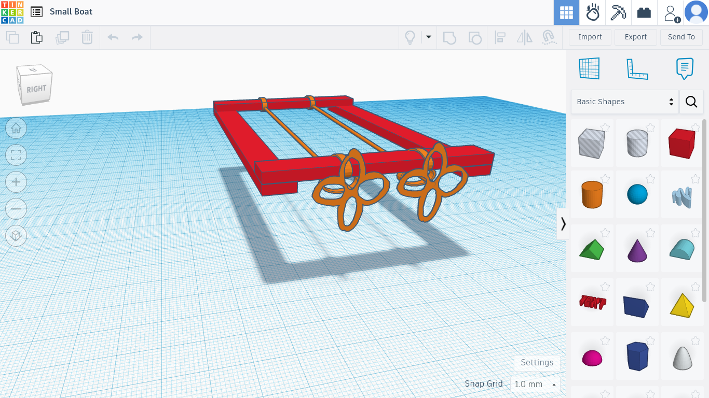
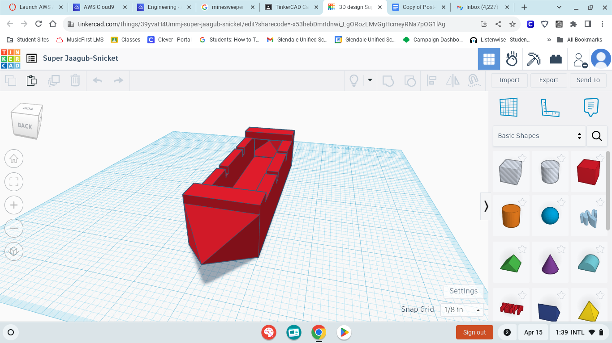

8/21-24/23 - Week 1
This week we talked about saftey requirments for OSHA and did a project
of getting a marble the logest distance that we could under certian requrments. Our stratagy
was to line people up in a line and have them trade off the pipes to pass the marble along.
It worked well even though it took a while to get the hang of. We also started learning about
makeing our website.

8/28-8/31 - Week 2
This week we took the quiz on the enginering proccess and saftey. We also started to
design a complicated way to get a baseball to pop a ballon. We started using tinkercad this week and I made a
cat bed with a cat in it. I find tinkercad really hard to control even though I understand the theory of how to
use it. I am better at using tinkercad then I was the first time and will keep improving.

9/5-9/7 - Week 3
This week we finished our tinkercad for the ruth goldberg design. Today we started on creating the machine
and so far it is going well. My team had a rough start with who our group was being unclear but it is now finaled out with me and Bug
in a group with just each other now. I forsee that there will be complications with what we are making in the future but for now every
is going well. We have gotten some of the base pieces cut out so far and have started working on the pulley sytem which will take a while.

9/11-9/14 - Week 4
This week we finished working on our Rube Goldberg machines and tested them. The bigist change that we made was
that we removed the car from existence. We also added a lot more supports and the ballon ended up being atached to the outside of the
structure rather than inside it. Because of this the needle position was also changed from the top of the lever to the bottom. While
testing we did have to do a few runs and adjust a few things, such as further sucuring the needle, for it to work. Overall the project
went really well and I am very happy with the way the design turned out. The main thing that I would change would be that the final slope
was steeper but it did work as is so I'm still happy with it.
9/18-9/21 - Week 5
This week we did two challange projects. The first was to make a flotation device with one piece of paper, sissorcs
and tape in twentey minutes. The goal was for your device to float for five minutes with the heaviest whieght. I made a boat thing with paper
extending from sides and I won the challange with the weight being 136. The other project was to draw a desgien for an E and then following
the instructions of someone eles's E cut it out. I don't know how I did on that one yet because we have not gotten our grades for it back yet.
I had a lot of fun with both challenges and look forward to more in the future.
9/25-9/28 - Week 6
This week we did a lab where we disected a computer. We got to look through all of the parts and then we put it back to
together. Me and Bug ended up takeing appart the hard drive and the CD player as well because we where curious. We finished the main part
quickly but taking the additional two pices apart add quite a bit of time on. The hard drive had a very shiny interior and was super fagile so
we where not allowed to poke around the inside of it much but we got to poke around a bit in the CD player. Me and Bug are planing to find some
older electronics so that we can take those apart in the future.


10/2-10/5 - Week 7
This week we did a challange where we made a cardboard prothstetic hand that picked up an empty water bottle. I worked on this
challange with Bug and we manged to make it work pretty quickly without looking at a design online first. After we got it to work we looked at online
designs in order to improve it. Our design was based around trying to mimic the human hand with how tendons work. The bigest problem we encountered
was not having enough grip so we fixed this by wraping rubberbands around the finger tips of the hand. I don't think that I really leared anything new
this week, because I have had and intrest in bioengineering in the past, but I had a lot of fun reviwing it and working on the hand project.

10/9-10/12 - Week 8
This week we started learning about aerospace engineering. We started a new project for areospace engineering that is launching
a 2 liter soda bottle as far as we can. We have had to go into pairs where we are not working with someone that we know or have worked with in the past.
Today we started to desiging the bottle on tinkercad and I am not sure how much I did the asignment correctly. Our teacher said to make a rocket or
airplane and I leaned more twoards an airplane design which may not have been the wisest move. I choose to do more of an airplane design becuase the challange
is to have it go the farthest is distance not the highest up and airplanes are designed after birds with the goal to travel far rather then high. To be specific
I based my design off of a wandering albatross which can fly without flaping thier wings fo hours at a time. Of course this has far more to do with how they
use dynamic soaring while in flight, which I would not be able to replacate in this challange, but their wing shape and body proportaions do still play a
big part in how they are able to fly for so long at such high speeds. Another part of how they fly for so long is that the birds lock their joints as by
doing that they save a lot of energy. A fun fact about wandering albatross is that they have one of the longest wingspans of all flying birds, able to
get up to a wingspan of just under 12ft.
10/23-10/27 Week 10
This week we cleaned water using filters. Me and Bug worked on the project together and the order of materials we chose was cotton
balls at the bottom, then the sand, the pebbles, and finally the rocks. Because we where not allowed more materials but our fillter was to dirty to do anything
after only 2 run throughs we decided to clean the fillter. We did this by running clean water though the filter until the water ran clear and then we ran the
dirty water through the filter again. We repeated this prosses until the water that was orgiganlly dirty ran clear. We got our water the clearest out of
everyone and I do not think there is a way that we could have made it clearer with the time and materials that we had. I am very happy with our results and
had a lot of fun with this project.
10/30-11/3 Week 11
This week we started on electrical enginering and did two labs on making breadboards. I really enjoyed this because it was like a
complicated puzzle that was really fun. I enjoyed playing around with it and finished the labs quickly. While I enjoyed doing the labs I did not enjoy
helping others who where having trouble. I really look forwards to doing more of this with physical breadboards insted of with tinkercad next week. After
finishing the required labs I started on doing the voltage divider which was fun but it eas kind of hard to link up enough batterys to get to 150v. I learned
a lot this week and quite enjoyed it.
11/6-11/9 Week 12
Absent
11/27-11/30 Week 14
This week we did a project for the bussniss engineering unit. For the project we came up with a product and a shark tank pitch to
go along with it. My groups project was a mesuring devince that mesured the magnetic pull to calculate the distance between two points. Because of this
I did a lot of research on costs of magnets and other matierals that would be used. While coming up with an idea I also did a lot of reaserch on protective
gear for extream sports such as skiing, snowboarding, motercycling, and rockcliming. My favorite pitch was the plane because it was decently thought out
and seems like a product that I would enjoy using if I was in the costumer range.
What was the weight of your bridge?
Our bridge weighed 100 grams.
What was the weight held by your bridge?
Our bridge held 4000 grams.
What was the ratio of weight of bridge to weight held?
The ratio of wight of bridge to weight held was 40.
What was the heaviest part of your bridge? What contributed most to the weight?
The bridge was evenly weighted across the entire thing. The glue most likley added the most weight.
Where did the design of your bridge come from? Inspiration? Research?
The design of our bridge was inspired by trust bridges and supports systems in buldings. A lot of the research was done on trust bridges.
Did the design work as intended? Better? Worse?
While my design did not work as well as intended, due to the fact that we had to switch designs and remake the bridge at the last minute, the end design did do what it was
designed to and ended up working better then expected.
What was the point of failure of your bridge? Was that the expected weakest point?
The main point of faluire in my bridge was at the sides where the bridge was conected to the tables. This was the expected weak point however we also thought that the center
would be a major weak point which it did not turn out to be.
What can you do to improve your bridge? What can prolong points of failure?
Due to the fact that the bigst problem was the brige getting crushed together added supports inside of it would probley help.
Semester2
1/8-1/12 S2 Week 1
This week we worked on chemical engineering. We leared about the differecs between a chemical enginer and a chemisyt. We aslo made oblex. Oblex sucks and should not exist
but alas it does. Oblex is mixture of water and cornstarch that when force is exerted on it, it is a solid and when there is no force it is a liquid. This is really good
example of how a liquid that can be a solid under certian conditions other then ones related to temputure. This can also be seen with surfuce tension in water however that
is much harder to demonstrat in a class room.
1/15-1/19 S2 Week 2
This week we started on creating a proposlal for our aduino car. We did a lot of research and found that it was posibble to code it in a way that we would not need to control it
and instead it would just run on its own based on the envorment. Me and Bug split the work for the proposal evenly and we took the numbers for costs from sights like amazon.
1/22-1/26 S2 Week 3
So far we have a solid design but we did unfortunatly have to scrap 2 sets of code because we could not find the error. We are planing on getting all rotation and individual
control for each weel done by the end of week 4. Our first phase of bulding is to get the base code up and running so that we can later adjust it to the sensor.
2/5-2/9 s2 Week 4
This week did not go as planed. I got sick and missed two of the days and then when I got back the code no longer worked and we can not figure out how to fix it. At this point
I will probly consider it a succsess if we manage to make the thing move at all. I have a vauge hope that we will make it move by the end of week 5 but I am not sure.
We are currently looking into diffurent methods to see if we can make somthing work at all.
2/5-2/16 s2 Week 5-6
Our prosses so far has just been hoping that it would work and trying to fix it. The car dose run however because of the problems that we have had we lost a lot of time and
did not end up with the time to creat a more complecated code or incorparate a sensor. We also did not have enough time to make a particuraly good boddy so it just vaugly existing
at this point. The next steps are to test it more and try to fix any lingering problems that we can.
2/20-2/23 s2 Week 7
The testing went about as expected with the car fallowing the code for the most part. The car did turn slightly to the right whenever it was going straight and I think that
was due to one of the weels not being on perfectly straight. Our car ran on a loop following the code and as such did not have a limit to how far it could go like the mouse
trap cars did. If I had more time I would fix the weels so that it could actuly go straigt and I would make the boddy more stable. I would also add a sensor and some more
complex and interesting coding becuase ours was pretty basic and I would like to see how far we could take it.
s2 Week 9
For the last day we are planing to have me create a webing to put over the egg and construct the cotton around the egg. Bug and I split the work for the project with Bug doing the
mesuring and cutting of all the materials, put the paracute together, and did most of the work for the tinkercad. I seperated the cotton balls, constructed the web, and
created the design for the device. For the paper challange even though I made a plane that would fly straight and go quite far my aim is not very good and it went into a tree.
3/11-1/15 s2 Week 10
Our egg did not crack at all. The parachute allowed for it to fall very slowly and not have a large impact force. The webbing also absored what pressure there was when it hit
the ground. These two factors combinded to create a very secure design that allowed the egg to land saffley. If we had more time the only thing that we would do would be clean
the design up a bit so that it looked better. I worked on my own for the waterballon challage and my design secseded. I would not do anything differently besides having a faster
person run the ballon instead of me.
3/25-3/29 s2 Week 11
This week we started on making a moving flotation device to get accross 500m the fastest. My team is using a propeler system that gets power from a rubber band. The hardest part
of this challage has so far been the limitations on materials. It has made us have to use creativity to be able to create a design that will work. We are making the frame out of
popcicale sticks and the propeler is made out of toothpicks, paperclips, and duck tape.

4/1-4/12 s2 Week 12
We ened up changing the way that the propeler was spining so that it would be a lot more effecient with its movment. Testing went well and even though it did not make it to the
end with one wind up, it was counted as being able to make it all the way accross because there was no rule for how many times we could do it. Other then that testing went smoothly
and went how we expected without any suprises. If we had more time I would probley make the blades for the propeler wider so that it could catch water better. I learned how to
test and fix a design over and over agian until it works.

4/8-4/12 s2 Week 13
This week we made a tinkercad for a boat and made a bridge out of post-it notes. I based my boat design off of kyaks because they are low to the water which reduces the chances
of tiping and its shape also makes it faster. We estimatied that the bridge would be 432 inches and it ended up being 439. The design that we used was that the postit notes
where each cut into zigzags which reduced the amout of conection points between seperat peices and made the bridge more stabel.
